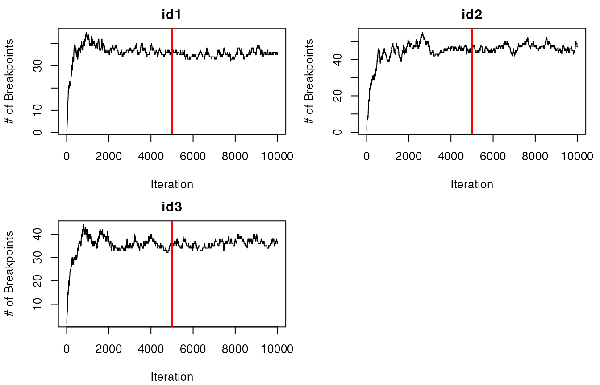
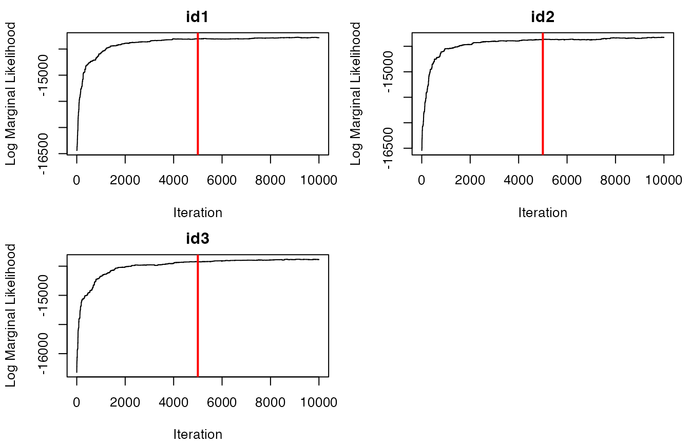
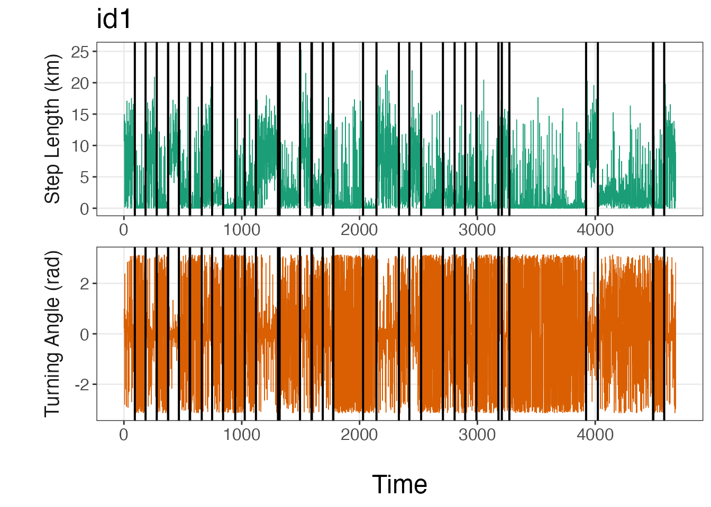
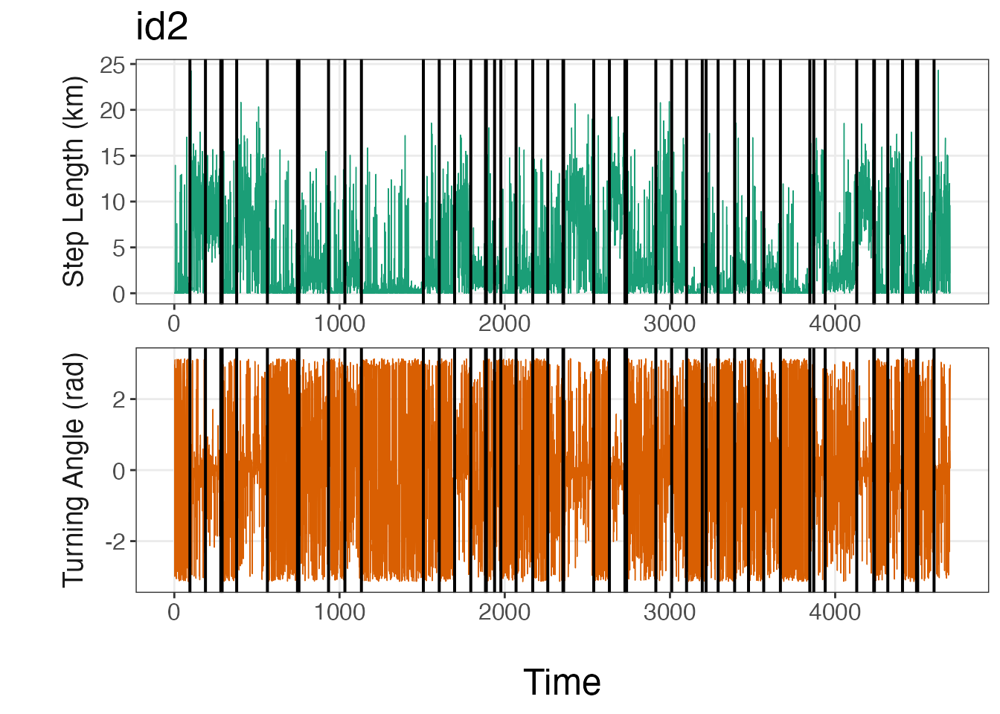
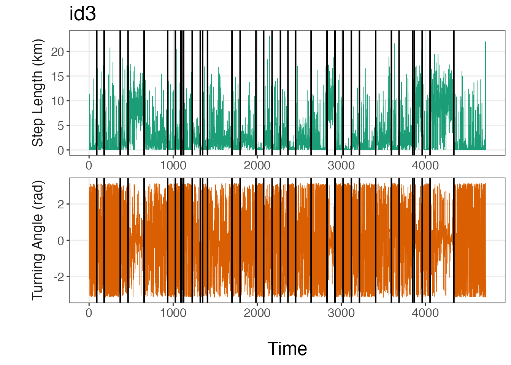

Introduction
At this stage, only observations at a single time interval have been retained and data streams (i.e., step lengths, turning angles) have been discretized to perform segmentation on each animal ID. These data are then used as input for the Bayesian segmentation model, which uses a reversible-jump Markov chain Monte Carlo (RJMCMC) algorithm to estimate the breakpoints where values substantially change for the data streams. To facilitate the parallel computation of this model (for each ID), the data must be stored as a list.
library(bayesmove) library(dplyr) library(ggplot2) library(purrr) library(tidyr) library(lubridate) library(furrr) # Load data data(tracks.list) # Check data structure str(tracks.list) #> List of 3 #> $ id1:'data.frame': 4683 obs. of 11 variables: #> ..$ id : chr [1:4683] "id1" "id1" "id1" "id1" ... #> ..$ date : POSIXct[1:4683], format: "2020-07-02 12:00:00" "2020-07-02 13:00:00" ... #> ..$ x : num [1:4683] 0 10.6 25.5 31.2 36.2 ... #> ..$ y : num [1:4683] 0 -1.67 -0.61 9.54 19.87 ... #> ..$ step : num [1:4683] 10.7 14.97 11.65 11.45 7.24 ... #> ..$ angle: num [1:4683] NA 0.227 0.987 0.067 0.032 ... #> ..$ dt : num [1:4683] 3600 3600 3600 3600 3600 3600 3600 3600 3600 3600 ... #> ..$ obs : int [1:4683] 1 2 3 4 5 6 7 8 9 10 ... #> ..$ time1: int [1:4683] 1 2 3 4 5 6 7 8 9 10 ... #> ..$ SL : num [1:4683] 5 5 5 5 4 2 5 2 4 5 ... #> ..$ TA : int [1:4683] NA 5 6 5 5 1 5 8 5 4 ... #> $ id2:'data.frame': 4697 obs. of 11 variables: #> ..$ id : chr [1:4697] "id2" "id2" "id2" "id2" ... #> ..$ date : POSIXct[1:4697], format: "2020-07-02 12:00:00" "2020-07-02 13:00:00" ... #> ..$ x : num [1:4697] 0 -0.00464 0.00375 -0.05953 -0.05953 ... #> ..$ y : num [1:4697] 0 -0.001097 -0.000623 -0.013634 -0.013634 ... #> ..$ step : num [1:4697] 0.005 0.008 0.065 0 0.892 ... #> ..$ angle: num [1:4697] NA 2.97 -3 2.89 3.11 ... #> ..$ dt : num [1:4697] 3600 3600 3600 3600 3600 3600 3600 3600 3600 3600 ... #> ..$ obs : int [1:4697] 1 2 3 4 5 6 7 8 9 10 ... #> ..$ time1: int [1:4697] 1 2 3 4 5 6 7 8 9 10 ... #> ..$ SL : int [1:4697] 1 1 1 1 2 5 3 1 1 1 ... #> ..$ TA : int [1:4697] NA 8 1 8 8 4 8 8 8 6 ... #> $ id3:'data.frame': 4716 obs. of 11 variables: #> ..$ id : chr [1:4716] "id3" "id3" "id3" "id3" ... #> ..$ date : POSIXct[1:4716], format: "2020-07-02 12:00:00" "2020-07-02 13:00:00" ... #> ..$ x : num [1:4716] 0.00 -6.16e-05 1.34e-01 1.34e-01 -2.60 ... #> ..$ y : num [1:4716] 0.00 -6.58e-05 5.72e-02 5.64e-02 -1.81 ... #> ..$ step : num [1:4716] 0 0.145 0.001 3.321 11.272 ... #> ..$ angle: num [1:4716] NA 2.728 -2.109 -0.842 0.12 ... #> ..$ dt : num [1:4716] 3600 3600 3600 3600 3600 3600 3600 3600 3600 3600 ... #> ..$ obs : int [1:4716] 1 2 3 4 6 7 8 9 10 11 ... #> ..$ time1: int [1:4716] 1 2 3 4 5 6 7 8 9 10 ... #> ..$ SL : int [1:4716] 1 2 1 3 5 1 1 1 1 1 ... #> ..$ TA : int [1:4716] NA 8 2 3 5 7 8 8 1 1 ...
Data for each animal ID are stored separately in each element of the list, where elements include a data frame of the data, including each discretized data stream. Before the model can be run, each of the data frames within the list must only contain a column for the id, as well as the columns that store the discretized data streams.
Run the segmentation model
set.seed(1) # Define hyperparameter for prior distribution alpha<- 1 # Set number of iterations for the Gibbs sampler ngibbs<- 10000 # Set the number of bins used to discretize each data stream nbins<- c(5,8) future::plan(multisession) #run all MCMC chains in parallel #refer to future::plan() for more details dat.res<- segment_behavior(data = tracks.list2, ngibbs = ngibbs, nbins = nbins, alpha = alpha)
Now that each of the tracks have been segmented, we need to inspect the trace-plots for the log marginal likelihood to determine whether the model converged or not. Additionally, we can inspect a traceplot of the number of estimated breakpoints per iteration of the RJMCMC for each ID.
# Trace-plots for the number of breakpoints per ID traceplot(data = dat.res$nbrks, ngibbs = ngibbs, type = "nbrks")

# Trace-plots for the log marginal likelihood (LML) per ID traceplot(data = dat.res$LML, ngibbs = ngibbs, type = "LML")

It appears that the models have converged based on the traceplots of the log marginal likelihoods for all IDs. If this was not the case, the model would need to be re-run with a greater number of iterations for ngibbs. It also appears that most IDs likely have 30-40 breakpoints, but the exact number and position of these breakpoints will be determined by selecting the maximum a posteriori (MAP) estimate for each animal ID. This is performed as follows:
# Determine MAP for selecting breakpoints MAP.est<- get_MAP(dat = dat.res$LML, nburn = 5000) MAP.est #> [1] 9364 9912 9084 brkpts<- get_breakpts(dat = dat.res$brkpts, MAP.est = MAP.est) # How many breakpoints estimated per ID? apply(brkpts[,-1], 1, function(x) length(purrr::discard(x, is.na))) #> id1 id2 id3 #> 41 47 34
The object MAP.est is storing the iteration at which the MAP estimate occurs for each ID, whereas brkpts is a data frame that stores all of the breakpoints per ID. We can plot these breakpoints over the discretized data streams to inspect how well this appears to match changes in these values.
Breakpoint visualization
The bayesmove package provides a number of functions to visualize results from the model, such as traceplot(). The plot_breakpoints() function provides an easy method to visualize the breakpoints compared to the data and to determine whether the number and location of breakpoints appear to be appropriate. The number and position of breakpoints will depend on a number of factors, such as the number of observations per ID, the sampling interval of the biologging device, and the method by which data streams were discretized. If the breakpoints do not appear to fit the data well, then the limits used to discretize the data streams likely need to be modified and the model re-run.
Additionally, there are a number of options to use when visualizing breakpoints compared to the data streams, such as plotting by date or by observation (time1). Additionally, data streams can be visualized on their original scale (continuous) or as bins. An example is provided here using continuous values for step lengths and turning angles by observation, but this can be easily modified.
# Plot breakpoints over the data plot_breakpoints(data = tracks.list, as_date = FALSE, var_names = c("step","angle"), var_labels = c("Step Length (km)", "Turning Angle (rad)"), brkpts = brkpts)

From these lineplots, it appears that the segmentation model estimated the breakpoints quite well to create relatively homogeneous units of observations based on SL (step lengths) and TA (turning angles). If the user would like to plot the bins instead, they should replace step and angle with SL and TA, respectively, as well as the y-axis titles for var_names.
Now that the MAP estimates of the breakpoints have been identified and we are satisfied with the results, we will use these breakpoints to define track segments of observations for each individual. These segments represent different changes in movement patterns based on the variables that were originally selected.
Assign track segments
# Assign track segments to all observations by ID tracks.seg<- assign_tseg(dat = tracks.list, brkpts = brkpts) head(tracks.seg) #> id date x y step angle dt obs time1 SL #> 1 id1 2020-07-02 12:00:00 0.00000 0.0000000 10.695 NA 3600 1 1 5 #> 2 id1 2020-07-02 13:00:00 10.56492 -1.6654990 14.974 0.227 3600 2 2 5 #> 3 id1 2020-07-02 14:00:00 25.50174 -0.6096675 11.653 0.987 3600 3 3 5 #> 4 id1 2020-07-02 15:00:00 31.22014 9.5438464 11.449 0.067 3600 4 4 5 #> 5 id1 2020-07-02 16:00:00 36.15821 19.8737009 7.237 0.032 3600 5 5 4 #> 6 id1 2020-07-02 17:00:00 39.06810 26.4996352 0.119 -2.804 3600 6 6 2 #> TA tseg #> 1 NA 1 #> 2 5 1 #> 3 6 1 #> 4 5 1 #> 5 5 1 #> 6 1 1
These segments will then be clustered in the next stage of this Bayesian framework: a mixed-membership Latent Dirichlet Allocation model.